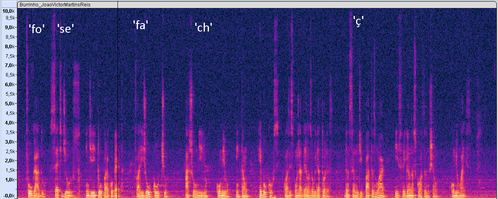
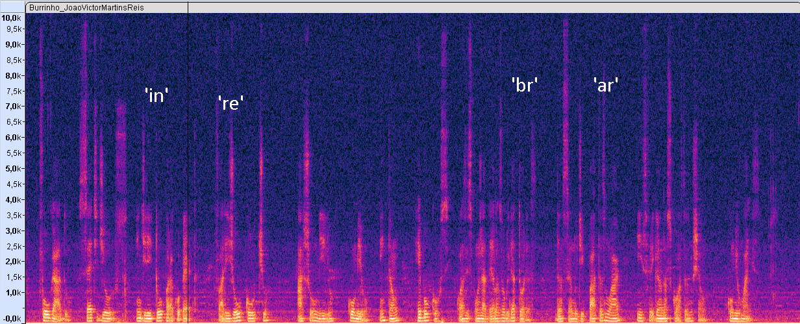
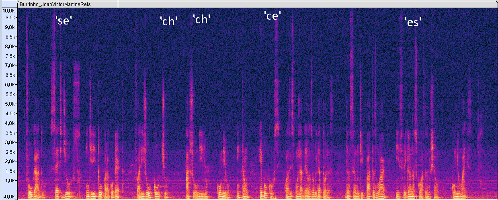
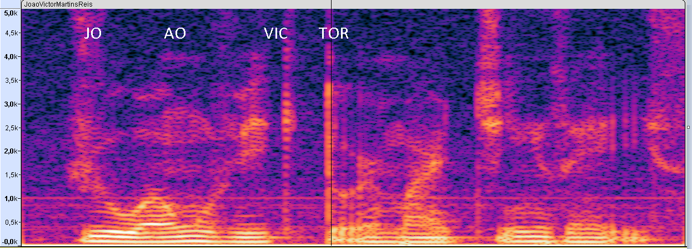
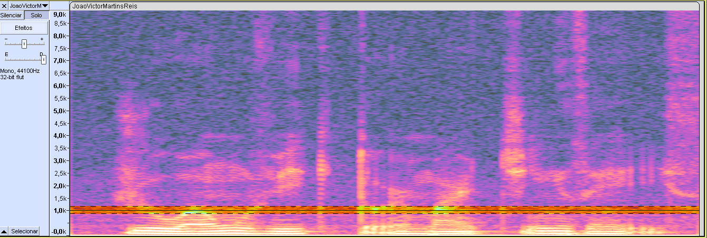
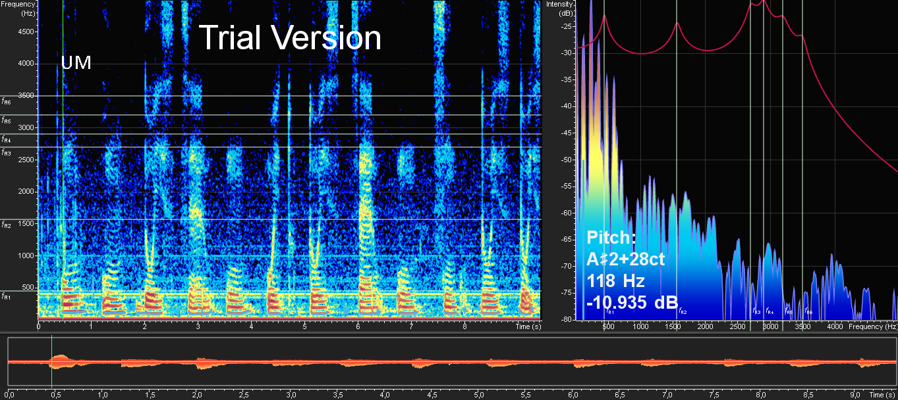
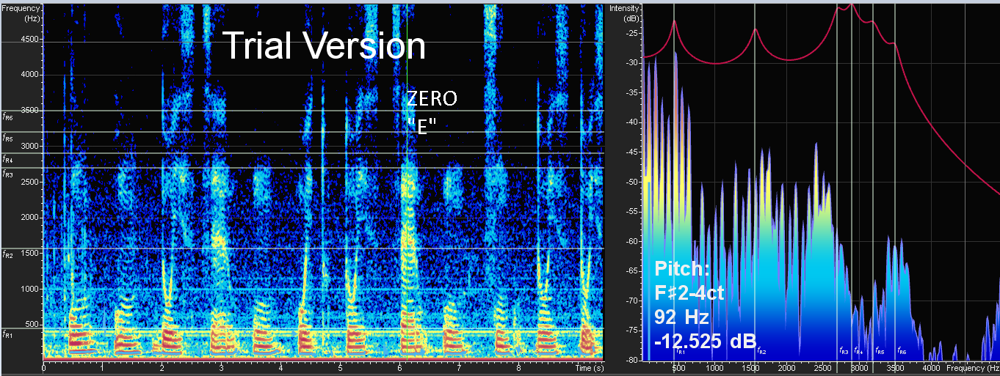
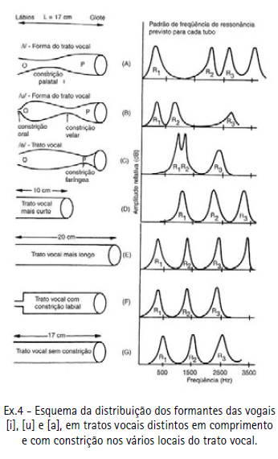
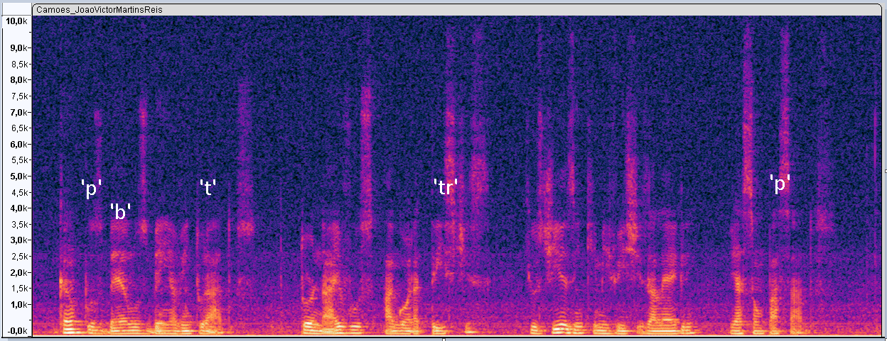

Captura dos audio com Audacity
Utilizando o software Audacity e um microfone , capturou-se os seguintes audios:
- a) nome completo, pronunciado com clareza, salve como “NomesSobrenomes.wav”
- b) Os números do meu RA completo, pronunciado dígito a dígito, salve como “RAxxxxxxxx.wav”
- c) Os pares de meu RA completo e salvo como “RA112018201522_pares.wav
- d) Gravado o trecho de O burrinho pedrês em Sagarana, salvo como “Burrinho_NomeSobrenome.wav”:
- e) Gravado o trecho da Lírica de Camões, salvo como "Camoes_NomeSobrenome.wav”:
“Folgado, Sete-de-Ouros endireitou para a coberta. Farejou o cocho. Achou milho. Comeu. Então, rebolcouse, com as espojadelas obrigatórias, dançando de patas no ar e esfregando as costas no chão. Comeu mais”
“Campos bem aventurados, Tornai-vos agora tristes, Que os dias em que me vistes Alegre, já são passados”.
Questões para entregar
- 1) O que são o pitch e fundamental f0?
- 2) O que é o modelo Fonte-Filtro para o trato vocal? Quais são os tipos de Fonte e os articuladores no Filtro?
- Fonte de pulso: Refere-se ao mecanismo de produção de sons da fala em que o ar é expelido da glote em pulsos regulares. Esses pulsos criam a base para a produção de sons de fala, como vogais e consoantes sonoras.
- Fonte de ruído: Refere-se ao mecanismo de produção de sons que não envolve uma oscilação periódica, mas sim uma turbulência no fluxo de ar. Isso é especialmente relevante para a produção de consoantes surdas, como "s" e "f"
- 3)O que são as formantes f1 a f4 ?
- 4)No que consiste o modelo de tubos acústicos para as formantes? O que é o coeficiente de reflexão (ki) neste modelo?
- 5)Desenhe o modelo de tubos acústicos do trato vocal, sendo o vetor dos coeficientes de reflexão, considerando A1 = π cm2 para k = [0.5 -0.7 -0.3 0.2 -0.4 0.9]
- 6) Quais as diferenças entre as excitações surda e sonora? E o que são as consoantes?
- Excitação surda: Refere-se a uma fonte de som produzida na laringe em que não há vibração das pregas vocais. Isso resulta na produção de sons sem componente tonal, como o som produzido nas consoantes surdas, por exemplo, /s/ e /f/. A energia acústica é produzida devido à turbulência do fluxo de ar em diferentes pontos de obstrução. 
- Excitação sonora: Refere-se a uma fonte de som produzida na laringe em que as pregas vocais vibram, criando um componente tonal no som. Isso resulta na produção de sons com uma qualidade mais musical, como os sons das vogais e das consoantes sonoras, por exemplo, /m/ e /n/. A energia acústica é gerada pela vibração das pregas vocais e modulada pelos articuladores no trato vocal. 
- As consoantes são fonemas da fala que são produzidos com algum grau de obstrução ou constricção no trato vocal. Elas podem ser classificadas de várias maneiras, incluindo o modo de articulação, o ponto de articulação e a sonoridade. As consoantes podem ser agrupadas em categorias, como oclusivas, fricativas, nasais, entre outras, dependendo de como o ar é modificado ou obstruído durante a sua produção. Elas desempenham um papel fundamental na formação de sílabas e palavras, e são essenciais para a compreensão e a produção de sons na linguagem falada 
- Vibração das pregas vocais: A excitação surda é produzida sem vibração das pregas vocais, enquanto a excitação sonora é produzida com vibração das pregas vocais
- Espectrograma: No espectrograma, a excitação surda é caracterizada pela ausência de formantes, enquanto a excitação sonora é caracterizada pela presença de formantes.
- Energia: A excitação surda é caracterizada por menor energia do que a excitação sonora.
- 7) O que são os fonemas plosivos?
- Plosivas sonoras: são produzidas com a vibração das pregas vocais.
- Plosivas surdas: são produzidas sem a vibração das pregas vocais.
- Oclusão: A passagem de ar no trato vocal é completamente bloqueada por um articulador, como os lábios, a língua ou os dentes.
- Explosão: A obstrução é repentinamente relaxada, liberando o ar bloqueado.
- 8) O que é a Energia de Tempo-Curto? Que informações ela revela?
- 9) Pesquise pelo menos dois métodos (um temporal e outro na frequência) para determinação do Pitch.
- Método de Autocorrelação (temporal): Este método envolve o cálculo da autocorrelação do sinal de áudio em diferentes atrasos de tempo. O pitch é identificado quando a autocorrelação é maximizada, indicando a presença de padrões periódicos no sinal. Este método é amplamente utilizado devido à sua simplicidade e eficácia na detecção do pitch em sinais de áudio.
- Método da Transformada Rápida de Fourier (FFT) (frequência): Este método envolve a aplicação da Transformada Rápida de Fourier (FFT) ao sinal de áudio para analisar as componentes de frequência presentes no espectro. O pitch é identificado observando os picos no espectro de frequência que correspondem às frequências harmônicas presentes no sinal. Este método é amplamente utilizado devido à sua precisão na análise espectral e na identificação de componentes de frequência
Usando a forma de onda e o espectrograma e do Audacity, encontre um pitch no seu Nome e uma f0 no seu sobrenome, usando o arquivo 1.a anterior, imprima a imagem usada e destaque suas respostas na imagem, indicando de qual fonema está efetuando cada medição (*).
frquencia fundamental proxima de 1khz.
O modelo Fonte-Filtro é uma representação teórica utilizada para descrever o processo de produção de sons da fala no trato vocal humano. Ele descreve a interação entre a fonte sonora (localizada na laringe) e o filtro acústico (constituído pelas cavidades orais e nasais).
A fonte representa a fonte de energia sonora gerada na laringe durante a produção da fala. Existem dois tipos principais de fonte no modelo Fonte-Filtro:
O filtro, por sua vez, representa as cavidades orais e nasais, incluindo a cavidade oral, a cavidade nasal, a faringe e a posição da língua e dos lábios. Os articuladores no filtro são responsáveis por modificar a qualidade e as características do som à medida que passa pelo trato vocal. Eles incluem:
Língua: Responsável por moldar e direcionar o fluxo de ar para a produção de diferentes sons articulados, como vogais e consoantes.
Lábios: Participam na articulação de diversos sons, como os produzidos nas consoantes labiais.
Palato: Incluindo o palato duro e o palato mole, que desempenham um papel crucial na produção de sons nasais, como o "n" e o "m".
Faringe: Atua como uma área de ressonância e pode ser ajustada para produzir diferentes tons e qualidades de sons.
O modelo Fonte-Filtro é fundamental para compreender como os sons da fala são produzidos e modificados no trato vocal humano, e como as diferentes configurações dos articuladores influenciam na formação de diferentes fonemas e na qualidade da fala.
Usando dois números diferentes dentro do arquivo 1.b anterior, usando o espectrograma ou o espectro, determine as formantes de duas vogais diferentes, imprimindo e destacando na imagem estes valores (*).
As formantes f1 a f4 referem-se a picos específicos de energia no espectro de frequência de um som, que são associados à produção de vogais e desempenham um papel fundamental na percepção e na identificação de diferentes qualidades de som da fala. Esses picos são o resultado da interação entre a fonte sonora (como as cordas vocais) e o filtro vocal (as cavidades orais e nasais), como descrito pelo modelo Fonte-Filtro.
F1 (500 Hz) se relaciona inversamente com a altura da língua: F1 abaixa quando a língua levanta.
Exemplo: passagem de /a/ para /i/. Varia de 200 a 800 Hz.
F2 (1.500 Hz) se relaciona com o movimento de projeção da língua: F2 sobre a medida que a língua avança.
Exemplo: passagem de /o/ para /i/. Varia de 600 a 2.400 Hz.
Sunberg descreveu o formante dos cantores, responsável pela intensidade sonora dos artistas líricos. É um agrupamento de F3 e F4 e reforça frequências entre 2.300 a 3.200 Hz e origina-se na laringe. Nos baixos, ocorrem na frequência de 2.400; barítonos 2.600; tenores 2.800; meios-sopranos 2.900 e sopranos de voz aguda (sopranos ligeiros) 3.200.
 O modelo de tubos acústicos para as formantes é uma simplificação teórica do trato vocal humano, onde o trato vocal é representado como uma série de tubos conectados em série. Cada segmento do trato vocal (por exemplo, cavidade oral, faringe, cavidade nasal) é modelado como um tubo acústico com suas características específicas. Este modelo é utilizado para descrever como as ondas sonoras se propagam e são filtradas ao passar pelo trato vocal durante a produção da fala.
O coeficiente de reflexão (ki) é uma parte fundamental desse modelo e descreve a maneira como as ondas sonoras são refletidas nas junções entre os tubos acústicos. Cada transição entre tubos é caracterizada por um coeficiente de reflexão específico, que pode variar de -1 a 1. O coeficiente de reflexão é uma medida da quantidade de energia sonora refletida em uma junção. Os valores do coeficiente de reflexão afetam as características de ressonância das diferentes partes do trato vocal e, portanto, influenciam as formantes na produção da fala.
Para representar o modelo de tubos acústicos do trato vocal de forma mais clara, podemos usar um diagrama que ilustre os diferentes segmentos do trato vocal como tubos conectados em série, com os coeficientes de reflexão indicados em cada junção. Considerando A1 = π cm² e o vetor de coeficientes de reflexão k = [0.5, -0.7, -0.3, 0.2, -0.4, 0.9], o desenho pode ser feito da seguinte maneira:
Como você pode ver, os coeficientes de reflexão variam de acordo com o comprimento do tubo e o coeficiente de reflexão. Os tubos com comprimentos mais curtos têm coeficientes de reflexão mais altos, enquanto os tubos com comprimentos mais longos têm coeficientes de reflexão mais baixos.
Essas categorias são avaliadas durante um exame oftalmológico para determinar a saúde e a qualidade da visão de uma pessoa. É importante realizar exames regulares dos olhos para monitorar e tratar qualquer problema visual que possa surgir. Se você tiver alguma preocupação com a sua visão, é melhor consultar um profissional de saúde ocular qualificado.
Registre trechos no arquivo 1.d anterior para trechos sonoros, surdos e consoantes, usando ou forma de onda ou espectrograma, indicando qual fonema está destacando (*)
As principais diferenças entre as excitações surda e sonora são:
Os fonemas plosivos são uma classe de consoantes produzidas pela obstrução completa da passagem de ar no trato vocal, seguida por um repentino relaxamento da obstrução.
Os fonemas plosivos são divididos em duas subcategorias:
A produção de fonemas plosivos ocorre em duas etapas:
fonema plosivo consoante
analisando as imagens nota-se que no espectrograma, os fonemas plosivos são caracterizados por um pico de energia na frequência fundamental, seguido por um breve período de silêncio.
Os fonemas plosivos são consoantes curtas, com uma duração média de 20 a 30 milissegundos.
A Energia de Tempo-Curto (também conhecida como Short-Time Energy) é uma medida da variação da energia em um sinal de áudio ao longo do tempo. É uma técnica comumente utilizada no processamento de sinais de fala e música para detectar mudanças significativas na amplitude do sinal em intervalos de tempo curtos.
A Energia de Tempo-Curto é calculada dividindo o sinal de áudio em segmentos de tempo pequenos e calculando a energia em cada segmento. Isso pode ser feito somando os quadrados dos valores de amplitude do sinal dentro de cada janela de tempo. Essa medida pode ajudar a identificar a presença de eventos sonoros, como a presença de fala, pausas, batidas ou mudanças na intensidade do som
A determinação do pitch, que é a frequência fundamental percebida de um som, pode ser feita utilizando uma variedade de métodos, incluindo abordagens temporais e de frequência. Aqui estão dois métodos comuns para determinar o pitch:
...